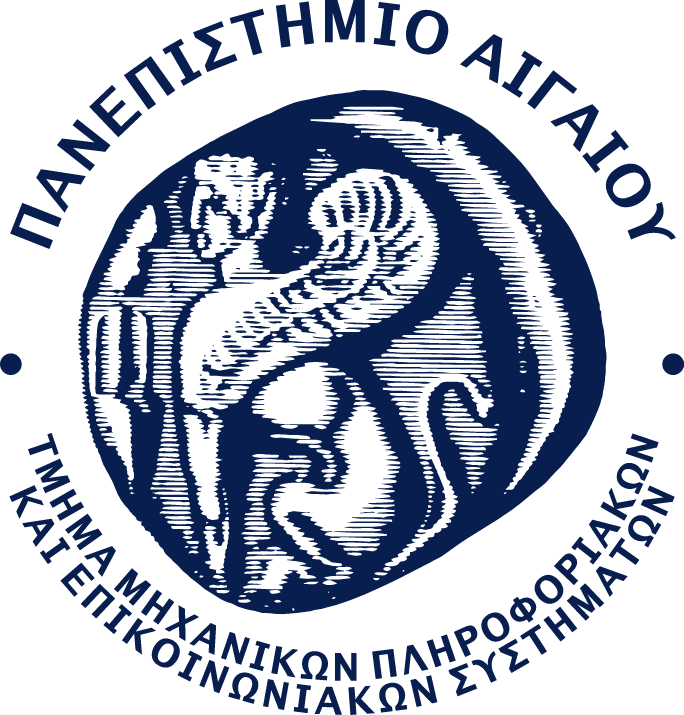
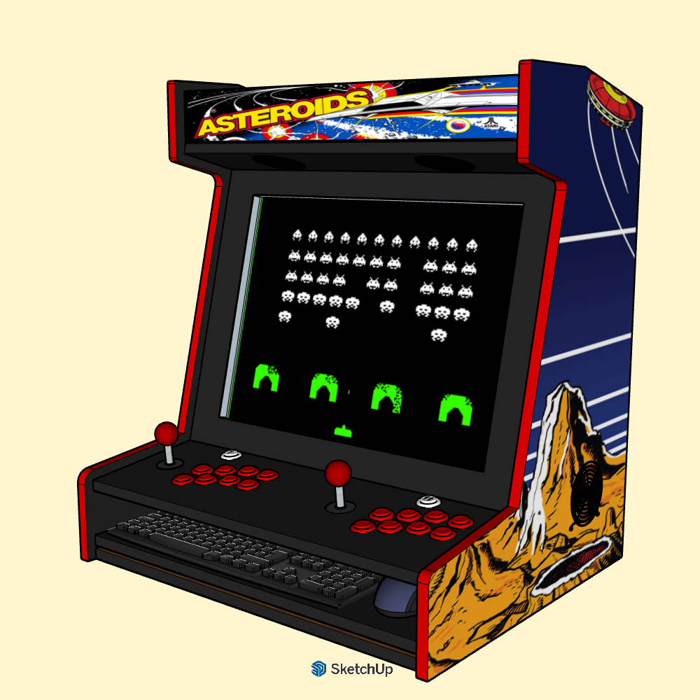

Μηχανικός Πληροφοριακών & Επικοινωνιακών Συστημάτων | University of the Aegean
Συμμετοχή στα CTFs των ετών:
2025 2026
Πανεπιστήμιο Αιγαίου | Σάμος | 2023 - Σήμερα
Εστίαση σε Ασφάλεια, Δίκτυα και Σχεδίαση Συστημάτων.
Πανεπιστήμιο Αιγαίου | Σάμος | 2023 - Σήμερα
Εστίαση σε Ασφάλεια Πληροφοριακών Συστημάτων, Δίκτυα και Επικοινωνίες.
Συμμετοχή και υποστήριξη δράσεων στις παρακάτω ομάδες του Πανεπιστημίου Αιγαίου:
Εστίαση στην προώθηση του ανοιχτού λογισμικού, των τεχνολογικών εξελίξεων και της επιστήμης στην ακαδημαϊκή κοινότητα.
Πλήρης κατασκευή Arcade Cabinet. 3D σχεδιασμός (SketchUp), Ακριβή σχέδια και μέτρα σε χαρτί, χειρονακτική κατασκευή και παραμετροποίηση Batocera Linux σε desktop.

Πλήρης κατασκευή Arcade Cabinet. 3D σχεδιασμός (SketchUp), Ακριβή σχέδια και μέτρα σε χαρτί, χειρονακτική κατασκευή και παραμετροποίηση Batocera Linux σε desktop.
Τελικό Σχέδιο με Χρώματα (SketchUp)
Περιστρέψτε το 3D Μοντέλο
Σημείωση: Η φωτογραφία αριστερά δείχνει το τελικό σχέδιο με τα χρώματα, ενώ 3D viewer στα δεξιά επιτρέπει την τη επίβλεψη της κατασκευής
Επιπλέον, έχω συμμετάσχει σε διαγωνισμό του Junior Achievement με θέμα την Αγροκουλτούρα όπου καναμε με χρήση Computer Vision και Machine Learning μια πειραματική εφαρμογή (Agrivision) που μπορεί να αναγνωρίζει βλέποντας φύλα, σε ποιό φυτό ανοίκει, τι ασθένεια έχει και πληροφορίες για αυτή. Αυτό πραγματοποιήθηκε για το μάθημα της Ψηφιακής Καινοτομιας και Επιχειρηματικότητας.
Επιπλέον, είχα κατασκευάσει για την ομαδική εργασία στο μάθημα του Αντικειμενοστραφή Προγραμματισμού ΙΙ (Java), ένα πρόγραμμα με την χρήση Java και JavaFX (συγκεκριμένα με την χρήση FXML). Το συγκεκριμένο πρόγραμμα ήταν το κλασσικό παιχνίδι μνήμης με κάρτες όπου πρέπει να πετύχεις τα ζευγάρια. Αλλά είχε αρκετές δυναμικές λειτουργίες και features, όπως εικόνες για εμπρός και πίσω στις κάρτες, Γύρισμα από τον παίχτη και σε περίπτωση μη επιτυχίας εύρεσης ζευγαριού, αυτόματο γύρισμα στην αρχική θέση, Κατάλληλο μήνυμα στο τέλος του παιχνιδιού με τον τελικό χρόνο, Scoreboard κ.α.
Έχω συμμετάσχει σε τρία Youth Exchanges, στα 2 από αυτά ως Group Leader όπου αυτοί οι ρόλοι βοήθησαν στο να μάθω καλύτερα και στην πράξη πώς να συντονίζω ομάδες. Το πρώτο (Πολωνία) μάλιστα επικεντρώθηκε στη βιωσιμότητα (Sustainability και Zero Waste), το δεύτερο (Λιθουανία) στην κοινωνική επιχειρηματικότητα και το τρίτο (Ρουμανία) στην ψυχική και σωματική υγεία των νέων, και στην σημαντικότητα της δραστηριότητας και της κοινωνικής συμπερίληψης.
Ταξίδι 35 ημερών σε 16 χώρες και συμμετοχή σε 7 διαφορετικά meetups με κύρια μετακίνηση το τρένο, με απίστευτες εμπειρίες, σχέσεις και γνωριμίες, αφού γνώρισα και μοιράστηκα εμπειρίες και στιγμές και συμβίωσα με εκατοντάδες άτομα από όλη την ευρώπη.
Συμμετοχή στο ευρωπαϊκό πρόγραμμα URBACT και συγκεκριμένα στο "One Health for Cities" μέσω του Δήμου Ελευσίνας όπου χρησιμοποίησα μεθόδους μη τυπικής μάθησης κατά την επίσκεψή μου σε δημοτικά σχολεία, με σκοπό να ευαισθητοποιήσω τα παιδιά γύρω από το περιβάλλον, τις πράσινες πόλεις και την σωστή συμβίωση όλων μέσα σε ένα οικοσύστημα.